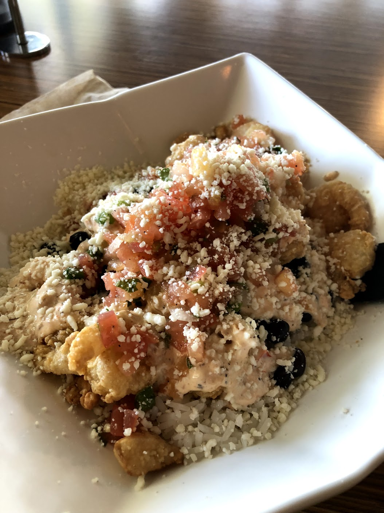
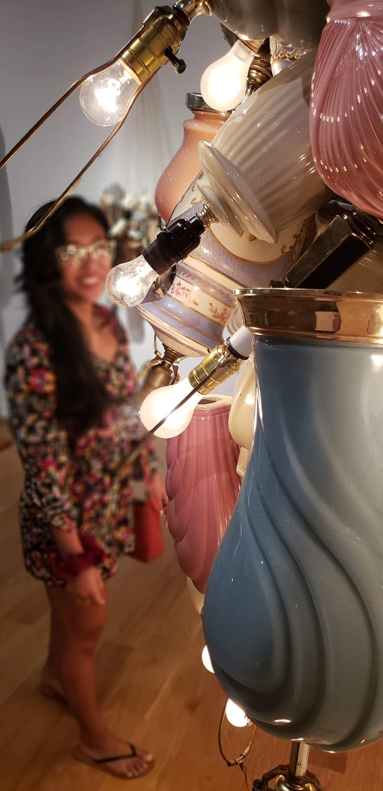
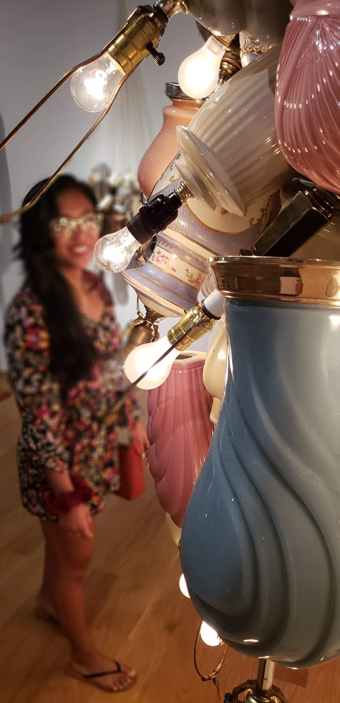
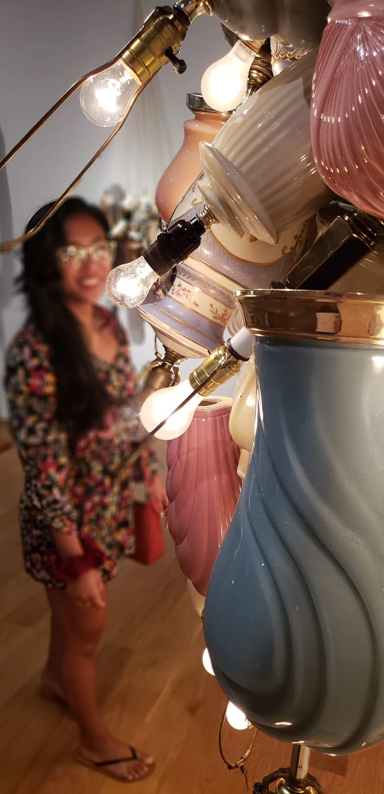
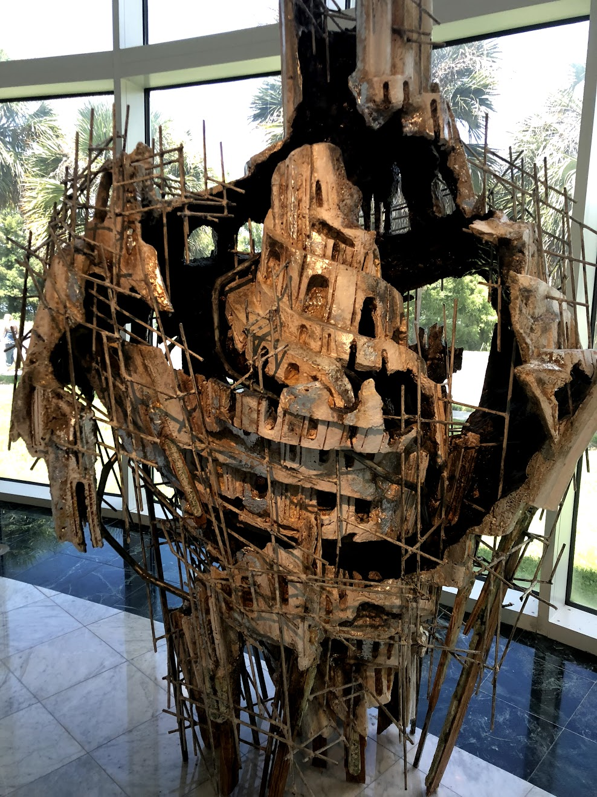
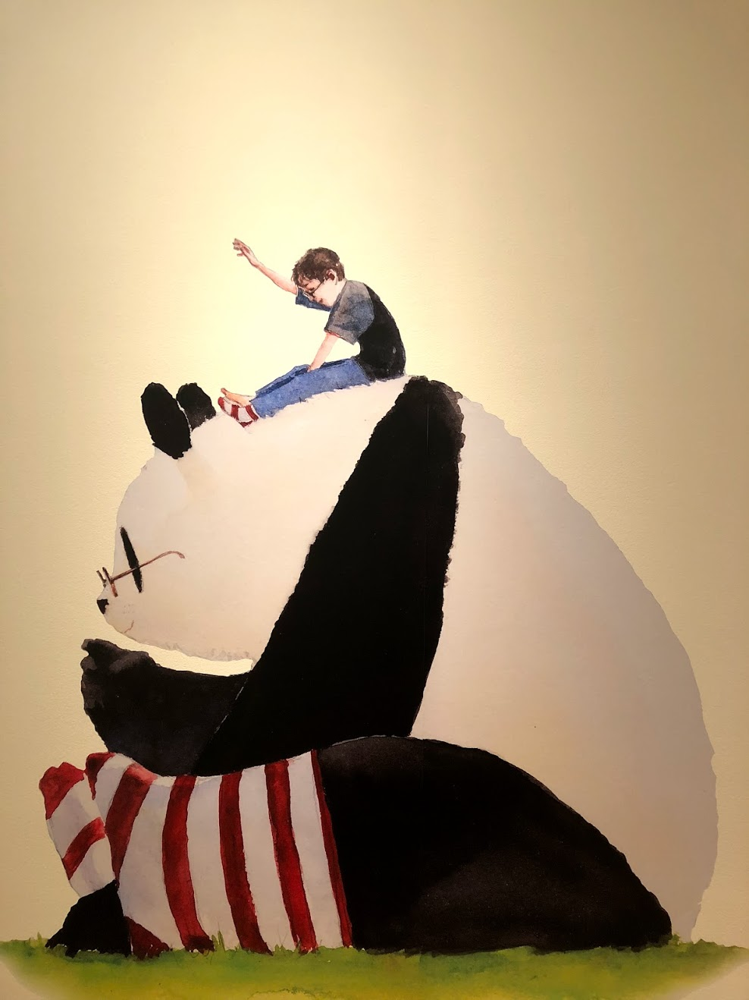
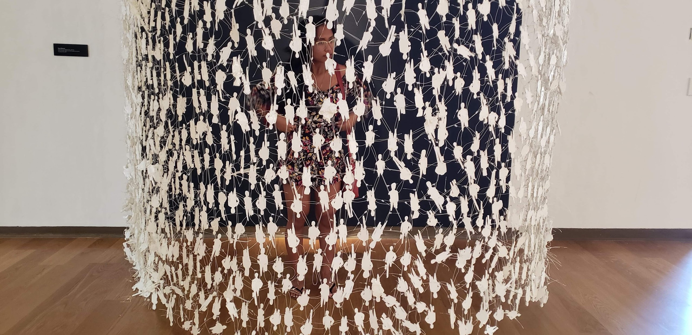
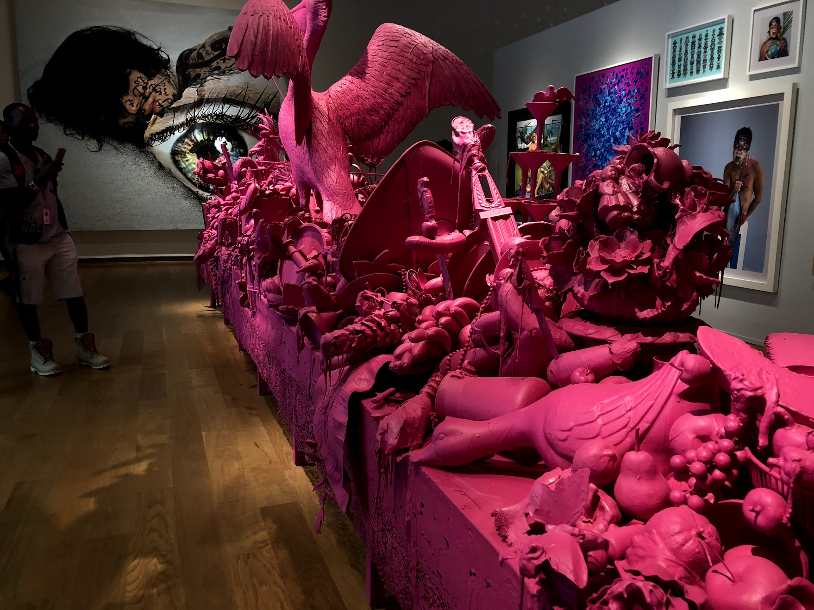
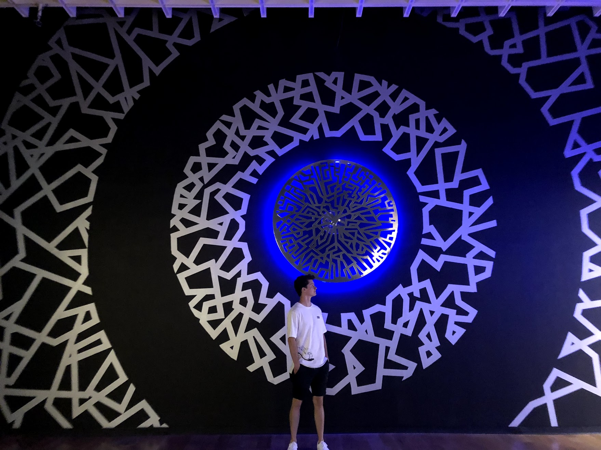

So I haven't seen Zach in I think an entire month? I'm not sure exactly when the last time I
saw him was but it's been a whooleeee minute. I'm also terrible at buying gifts for him, but I'll just blame him
for not really wanting anything/his mom buys him everything anyways ¯\_(ツ)_/¯ . He does love Chic-Fil-A so I got
him gift cards from there but the idea of me giving him just CFA gift cards seems really lame so I wanted to take
him out so we could do things together. As two poor college students we didn't do any super cool things but being
able to go out and spend time with him was the best.
Our day consisted of eating, art, and puppiesssss. We ate lunch at Jimmy Hulas! It was my first time eating there and
it was pretty good, not super dank but that's okay. I had a bowl with rice, beans and SHRIMP, and some sauce. Usually
in places that lets you pick your meat the shrimp is usually more $$$$$$ sooo I usually never get the shrimps. BUT they were
the same price so I appreciated that :D. As an asian I LOVE my rice and I mean I really love it. I can't eat a meal unless I have it. HOWEVER, they put way too much rice and just not enough shrimp which was sad :(. They did have these really good fries that I think had some kind of lemon spice in it and let me tell you WHAT. Those fries were really good and super different compared to the other fries I've had. I wish fast food restaraunts could do something similar to that because you'd catch me eating those everyday.
We also went to the Orlando Museum of Art and if you're a student, admissions were only $5!!! AMAZING. I'm pretty sure
we got like a $10 discount. Maybeeeeee, I'll just keep my UF ID even after I graduate. LIFE HACKS. Amazing. I've only been to
the Orlando Museum of Art two other times, once in my junior year of high school and another time with Katie, I think two years
ago. They do switch out the artworks so you don't see the same things everytime you visit. Which was something I didn't know.
I really like art and appreciate the different styles, even abstract art. If it makes people mad then I think the artwork did its job of getting people to feel an emotion, whether that be, confusion, admiration or hatred. I also really like that there
are so many different styles of art. There was a time where I felt that only realistic drawings or paintings were considered
art to me and because I couldn't do that I couldn't do art. Now, I know that there are so many different styles and I'm able
to create things that I really like even though it's not super realistic.
Sometimes I feel like going to an art museum would be boring because all you really do is look at things and then walk away. You're not allowed to touch anything or go super close to a painting either but it ended up being really fun! We kept making memes/jokes with the art (we are definitely very classy B-)) and it was just really nice to be around Zag and just joke around and make each other laugh :).
We end the day with the best. THE FLOOFERS. We went to this dog store in downtown and held some puppies. However, I'm not
sure if the store is really good. And when I mean good I mean, I'm really just questioning how they treat the puppies.
I don't know where they go once the store closes. Buutttt....I also love puppies T.T So that was my day with my lava. So goood
to see him and be with him. And I only spent like $33 for the entire day AND I paid for everything. Get you a sugar mama like me
($‿$)
Fun with No Money with my Honey

 






